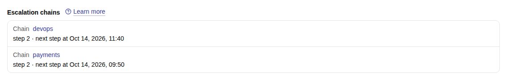

How an alert reaches people¶
This page follows one Alert from the moment Alertmanager sends it to the moment a person acknowledges it. Along the way it names every step that decides who is told, where and when: the Route and the Alert Group, the Teams of the Alert, the Destinations, the Escalation chains, and the Notification rules of the people they Page. Each step has a page of its own; this one shows how they fit together.
The example¶
The installation has two Teams and two people:
- The Team
devopshasivan, whose Schedule "Main" puts him On-call. He has linked his Mattermost account (Account links). - The Team
paymentshaspetr, who is On-call in its Schedule "Main". The Team also has a Schedule "Second line". Petr has not linked a Mattermost account yet. - The Route "Infrastructure" takes the Alerts with
category="infra". It has two Destinations,infra-criticalfor critical Alert Groups andinfra-noticefor the rest, and names the Escalation chaindevops. "Also to the Teams from the label" and "Run the Teams' Escalation chains" are on. - The Team
paymentshas two Destinations,payments-criticalandpayments-notice, by the same Severity conditions, and names the Escalation chainpayments.
The chain devops, owned by the Team devops, has three steps: Page the On-call of "Main" normally, wait 10 minutes,
Page the On-call importantly. The chain payments, owned by the Team payments, has seven:
- Page the On-call of "Main" normally.
- Wait 10 minutes.
- Only for critical: Page the On-call of "Main" importantly.
- Wait 15 minutes.
- Only for critical: Page the On-call of "Second line" importantly.
- In the Working hours of
paymentsonly: Page the whole Team. - Repeat from step 3, up to 2 times.
Everyone has the default Notification rules: a normal Page is a Mention, an important Page is a Mention, a wait of 5 minutes and a second Mention.
At 03:12 a warning KubernetesContainerOOMKilled of team="payments" arrives.
The path of the Alert¶
flowchart TD
am["Alertmanager"] -- "Snapshot" --> integration["Integration"]
integration --> route["Route Infrastructure<br/>category=infra"]
route --> group["Alert Group<br/>one status, one number"]
group -- "team label: payments" --> team["Team payments"]
route -- "warning" --> infra["Destination infra-notice"]
team -- "warning" --> pay["Destination payments-notice"]
route -. "names" .-> devops["chain devops"]
team -. "names" .-> payments["chain payments"]
devops -- "Pages in the Thread of" --> infra
payments -- "Pages in the Thread of" --> pay
infra -. "Mention, only with an Account link" .-> ivan["ivan"]
pay -. "Mention, only with an Account link" .-> petr["petr"]
devops -. "call, by the rules of the person" .-> gw["Notification gateway"]
payments -. "call, by the rules of the person" .-> gw
gw -. "calls the confirmed contact" .-> ivan
gw -. "calls the confirmed contact" .-> petrThe diagram reads from the top. Solid arrows are what always happens for this Alert; dotted arrows are what happens only where the configuration asks for it, such as a call through a Notification gateway.
- Integration. Alertmanager sends its Snapshot to the Integration, which stores the Alerts (Snapshot semantics).
- Route and Alert Group. The first Route whose Matchers pick the Alert takes it, here "Infrastructure", and the Alert joins the Alert Group of its Group key, or starts one (Routes and Group keys). The Alert Group has one status, whatever number of Destinations show it.
- Teams. The value of the Team label,
payments, names the Teampayments, so the Alert Group has that Team (Teams). - Destinations. The Route's own Destinations and, with "Also to the Teams from the label" on, those of each Team
are reached when their Severity condition is met by the Alert Group's Severity level
(Routing to Teams). The warning reaches
infra-noticeandpayments-notice; a critical Alert Group reachesinfra-criticalandpayments-criticalinstead. Muster publishes the Root message of the Alert Group in each, so each Destination has a Thread for it. - Escalation chains. The chains that run are those the Route names,
devops, and those the Teams name,payments, because "Run the Teams' Escalation chains" is on. Both start when the Alert Group is first published (When chains run). The Teamdevopsis not a Team of this Alert, but its chain runs all the same: the Route names it. - Where each chain Pages. A chain Pages only in the Threads of its own Destinations:
devopsin the Thread ininfra-notice,paymentsin the Thread inpayments-notice(Where chains Page). So a step that Pages everyone in a chat never rings another team's chat. - Pages. A step Pages a person by one of their two Notification rules: normal or important. A Mention of the rule is a reply in the Thread, and it rings the person only where they have an Account link in the Identity space of that Destination's Connection. A call of the rule goes through a Notification gateway to the person's confirmed contact, and needs no Root message and no messenger (How a Page reaches a person).
- Assignees. A person whom a Page reached becomes an Assignee, and the Root messages and the Alert Group page name the Assignees until somebody acknowledges.
- Acknowledge. An acknowledgement from any Destination, from the web UI or from a call stops every chain and makes the person the Owner.
The timeline of the chains¶
sequenceDiagram
participant D as "chain devops"
participant P as "chain payments"
participant I as "Thread in infra-notice"
participant N as "Thread in payments-notice"
Note over D,N: "03:12 the Alert Group is published"
D->>I: "Step 1: Mention @ivan"
P->>N: "Page not delivered: @petr has no linked Mattermost account"
Note over D,N: "03:22 ten minutes later"
D->>I: "Step 3: Mention @ivan, important"
Note over P: "Step 3 skipped: only for critical"
Note over D,N: "03:24 ivan acknowledges"
Note over D,N: "both chains stop, the Mention of 03:27 is not made"The diagram shows the first 12 minutes of the example, and it ends when Ivan acknowledges. In words, minute by minute:
- 03:12, the first Publication
- Both chains start at their first step. The chain
devopswrites "Step 1: @ivan, you are needed" in the Thread ininfra-notice. Ivan has a linked account there, so he becomes an Assignee with his Team, and the Root messages read "Assignees: @ivan (devops)". The chainpaymentsPages petr in the Thread inpayments-notice, but Petr has no Account link, so the reply reads "Page not delivered: @petr has no linked Mattermost account" and mentions nobody. The Timeline recordspage_not_delivered, and Petr is not an Assignee. Both chains then wait 10 minutes. - 03:22, step 3 of both chains
- The chain
devopsPages Ivan importantly: his important rule is a Mention now, a wait of 5 minutes and a second Mention. The chainpaymentsskips its step 3, "only for critical", because this Alert Group is a warning, recordsescalation_step_skippedand goes on to its wait of 15 minutes. - 03:24, Ivan acknowledges
- Acknowledge from
infra-noticeacknowledges the Alert Group inpayments-noticetoo. Both chains stop, the second Mention of Ivan's rule, due at 03:27, is not made, and the Assignees are cleared. The Root messages read "Acknowledged by @ivan · Escalation chains stopped": the Owner is named without a Team.
If nobody acknowledges, the chains go on. The chain devops has no step left after 03:22 and has run out. The chain
payments skips its steps 3 and 5 on every pass, "only for critical", and its step 6, first made at 03:37, falls
outside the Working hours of payments at night, so that is skipped too, with the reason outside_working_hours. Step
7 sends it back to step 3 twice, so steps 3 to 6 are made three times in all: step 3 at 03:22, 03:37 and 03:52, and
steps 5 and 6 at 03:37, 03:52 and 04:07. The chain runs out at 04:07, and the Alert Group is then Unclaimed: the Root
messages read "Nobody has taken this", and the chains Page nobody more until a point that starts them again, such as a
rise to critical or a Team that joins by a new Alert (Unclaimed).
The critical Alert¶
A critical CheckoutQueueBacklog of payments, with category="infra" like the first, goes to infra-critical and
payments-critical, and step 3 of payments is made, not skipped: it Pages the On-call of "Main" importantly. If
Petr's rules are in the state "Call" (the switch), his important rule calls him
through the Notification gateway at the same moment as its first Mention, and Mentions him again 5 minutes later. The
call goes to his confirmed contact whatever his messenger does, and he can acknowledge in the call
(Acknowledging from a call). The Mentions of his
rule are not delivered, since he has no Account link; the call needs none. Once the gateway accepts the call he becomes
an Assignee, as by a delivered Mention; a call the gateway refuses leaves the Assignees as they were. Calls to the same
person through the same gateway that come due close together go in one call
(Calls through a Notification gateway).
What the people see¶

The Alert Group page lists the chains that run with their current step and the time of their next step, and names the Assignees with their Teams. The Alert Group list has a column and a filter for Assignees, and the Home page lists, under "I am an Assignee", the open Alert Groups that an Escalation chain Paged the signed-in person about. The Timeline records each Page, each skipped step and each Page that was not delivered.
Where to go next¶
- Teams and Schedules say who is On-call and in which Team.
- Routing to Teams says which Destinations an Alert Group reaches.
- Escalation chains say what each step does and when chains start, start over and stop.
- Notification rules say how a Page reaches one person.
- Notification gateways say how a call reaches a person at night.